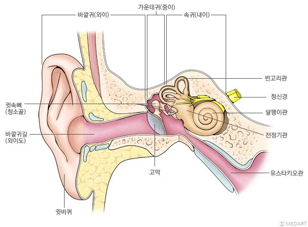

귀
-소리를 듣는 감각 기관, 소리를 받아들이는 감각을 청각이라 한다.
-귓바퀴 : 소리를 모은다.
-외이도 : 귓바퀴와 고막 사이의 통로
-고막 : 소리에 의해 진동하는 얇은 막
-귓속뼈(청소골) : 고막의 진동을 증폭하여 달팽이관으로 전달한다.
-청각 신경 : 청각 세포에서 받아들인 자극을 뇌로 전달한다.
-귀인두관 : 고막 안쪽과 바깥쪽의 압력을 같게 조절한다.
귀는 청각 외에도 몸의 회전이나 기울어짐을 받아들이는 평행 감각을 감지한다.
반고리관과 전정 기관을 통해 받아들인 자극이 신경을 통해 뇌로 전달되어 몸의 자세 변화를 느낌
평행 감각 기관
-반고리관 : 몸의 회전을 감지한다.
-전정 기관 : 몸의 기울어짐을 감지한다.
-평행 감각 신경 : 반고리관과 전정 기관에서 받아들인 자극을 뇌로 전달한다.
소리 자극이 뇌로 전달되어 소리를 듣는 과정
소리 → 귓바퀴 → 외이도 → 고막 → 귓속뼈 → 달팽이관의 청각 세포 → 청각 신경 → 뇌